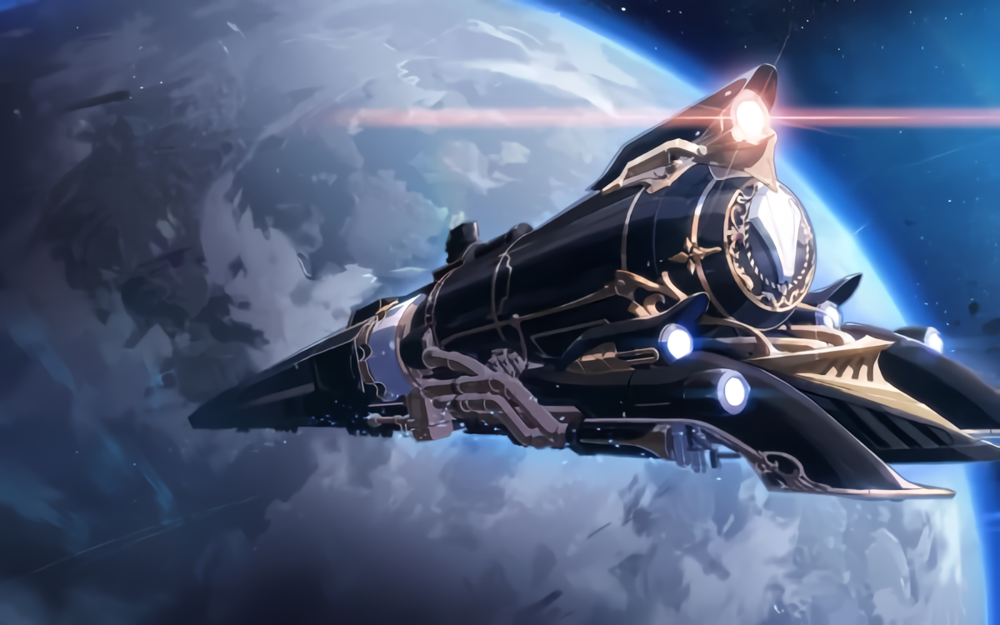

Astral Express

Astral Express diciptakan oleh Akivili,
Aeon dari Trailblaze, untuk mengangkut mereka dan Nameless melintasi galaksi.
Legenda mengklaim bahwa hati Akivili menggerakkan inti dari Express,
meskipun Himeko belum menemukan bukti untuk mendukung klaim tersebut.
Tak lama setelah jatuhnya Aeon mereka, sekelompok Nameless yang setia mengambil warisan
trailblazing Akivili pada diri mereka sendiri. Namun, jalur bintang menjadi terlalu terhalang
karena Stellarons mulai menyebar di seluruh galaksi, mencegah Express untuk berjalan. Akhirnya,
kereta tersebut jatuh ke dalam kondisi rusak dan ditinggalkan.
Beberapa waktu kemudian, Astral Express jatuh di sebuah planet yang tidak bernama,
di mana kereta tersebut ditemukan oleh Himeko. Dia berhasil memperbaiki kereta tersebut setelah bertahun-tahun
dan mulai menelusuri kembali jejak Akivili melalui alam semesta, akhirnya merekrut Welt, Dan Heng, March 7th, dan
Trailblazer ke dalam Kru Astral Express.
Aeons

Para Aeon adalah makhluk misterius dan seperti dewa yang berasal dari dimensi lebih tinggi dalam permainan Honkai: Star Rail,
yang mengawasi alam semesta. Kelahiran seorang Aeon memunculkan sebuah Jalur yang kemudian dikuasai oleh Aeon tersebut.
Aeon juga memiliki kemampuan untuk memberikan akses kepada manusia fana ke kekuatan MEREKA,
menjadikan mereka Emanator dari Jalur MEREKA.
Sedikit yang diketahui tentang keberadaan misterius yang berkeliaran di laut bintang luar angkasa.
Dibatasi oleh kognisi terbatas, makhluk cerdas hanya dapat melihat sekilas bahwa Aeon telah menginjakkan
kaki di takdir yang tidak dapat dilihat oleh hal biasa, dan mengandalkan konsep tertentu untuk menjalankan
kekuatan mereka yang tak terkira. Pada akhirnya, dalam mitologi yang disampaikan dari mulut ke mulut,
Aeon menjadi perwujudan dari konsep filosofis yang memiliki hubungan.
Kalau ada yang bisa memulai takdir yang dikendalikan Aeon, mereka akan diberkahi dengan sensasi jauh,
seperti pandangan sekilas yang melintasi galaksi. Banyak orang mengira,
ini adalah satu-satunya persimpangan yang dapat dimiliki oleh Aeon dan manusia.
Sejauh yang diketahui, terdapat 16 Aeon yang telah tercatat dalam sejarah. Berikut adalah list dari
Aeon yang telah tercatat:
Worlds
Beberapa Dunia yang terdapat di HSR
JARILO-VI
Sejarawan sering memulai sejarah planet Jarilo-VI dari Perang Dewa ribuan tahun lalu.
Perang antara sebelas Negara Perun dan Tentara Persatuan Veles membakar tanah selama bertahun-tahun
sampai musim semi awal mengubah keberuntungan perang, dan Veles menang total. Mereka memuji dewa perang musim semi
Jarilo dan menyanyikan puisi dengan nama yang sama untuk tanah tersebut. Nama planet ini mungkin salah terjemahan
yang mengandung nomor bait puisi.
Setelah perang mitologis berakhir, Jarilo-VI menikmati perdamaian panjang dan berkembang dari masyarakat pemburu-pengumpul
menjadi penjelajah luar angkasa. Sayangnya, Jarilo-VI adalah planet dengan sedikit sumber daya.
Pengembangan intensif membawa kemajuan teknologi tingkat tinggi, tetapi juga mengakhiri sejarah mereka.
Sumber daya habis, kedatangan Stellaron, dan munculnya Pembekuan Abadi... Bencana-bencana ini memusnahkan
peradaban Jarilo-VI yang gemilang namun berumur pendek.
Para penyintas Pembekuan Abadi berhasil bertahan hidup di sudut planet ini.
Mereka melupakan nama lama Jarilo dan menciptakan Belobog,
sebuah kota yang dibangun untuk berlindung dari Pembekuan Abadi, dan melanjutkan peradaban mereka.
Karena lingkungan alaminya yang terisolasi dan berbahaya, Jarilo-VI kehilangan kontak dengan dunia lain
setelah munculnya Kanker dari Semua Dunia.
XIANZHOU LOUFU
Xianzhou Luofu adalah salah satu dari enam kapal utama Aliansi Xianzhou.
Kapal ini berlayar di lautan bintang yang tak berujung seperti panah satu arah,
menembak ke arah musuh yang ditakdirkan dari Lord of The Hunt.
Setelah perang dengan Denizens of Abundance, Luofu bepergian antara wilayah antarbintang yang padat penduduk,
berdagang dan melakukan pertukaran budaya antara dunia yang berbeda.
Mereka menandatangani perjanjian dengan Interastral Peace Corporation,
dan membantu banyak dunia yang dilanda Denizens of Abundance untuk membangun kembali ekosistem mereka.
Orang-orang datang ke Luofu untuk mencari perawatan medis, belajar, dan berdagang, dengan banyak pengunjung
memenuhi dermaga.
Meskipun perang telah mereda, Luofu tidak mengendurkan penjagaannya terhadap Denizens of Abundance.
Starskiff dari Cloud Knights akan menuju ke planet-planet yang kehilangan kontak untuk mencari informasi,
sementara Komisi Sepuluh-Tuan Xianzhou tetap waspada terhadap setiap Pencari Elixir yang mengejar kehidupan
abadi — Keinginan untuk keabadian adalah awal dari semua tragedi. Xianzhou tidak akan membiarkan peradaban muda
lainnya mengikuti jalannya yang lama.
PENACONY
Penacony adalah Planet Perayaan di sistem bintang Asdana, juga dikenal sebagai Tanah Impian.
Sebuah hotel mewah yang terletak di atas langit yang tak terduga, Penacony juga merupakan tempat liburan
di mana selebritas antarbintang berpesta sepanjang hari dan orang-orang kaya dari berbagai dunia menikmati
petualangan mewah. Orang-orang berbondong-bondong ke sini untuk mencari impian yang mereka rindukan
atau sudah terkubur, dan melalui Dreampool di hotel, mereka dibawa ke dunia impian di mana segala sesuatu
bisa menjadi kenyataan.
Jarang tamu memperhatikan masa lalu Penacony yang berat. Ribuan tahun yang lalu, ini adalah penjara perbatasan
yang didirikan oleh IPC. Narapidana yang diasingkan harus bertahan dalam perjalanan yang sulit melintasi jarak yang luas
untuk mencapai lokasi ini, dan kemudian dipaksa untuk menjalankan tugas: Memperbaiki kebocoran di mana memoria
meresap ke galaksi. Saat mereka bekerja sambil terpapar memoria, para narapidana secara bertahap menemukan diri
mereka memasuki dunia impian bersama yang memikat, di mana mereka mendapatkan satu keinginan bersama: kebebasan.
Setelah letusan Kanker dari Semua Dunia, kepemilikan Penjara Perbatasan berubah tangan. Catatan sejarah
terkait perjuangan ini langka dan sering dipertanyakan. Namun, beberapa catatan dengan jelas menyatakan bahwa
dengan bantuan berbagai faksi - termasuk Mourning Actors, Masked Fools, Nameless, dan Omen Vanguards -
para narapidana muncul sebagai penguasa baru dari wilayah yang baru lahir ini. Suara ketidakharmonisan kemudian
secara berkala terdengar selama masa ketika itu menjadi tanah pengasingan. Hanya ketika Keluarga turun dan mengambil
kendali Dreamscape, Penacony mengalami kemakmuran yang tak tertandingi dan eksplosif,
berubah menjadi resor kosmik yang terkenal.